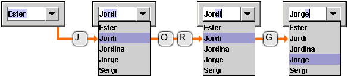

See: Description
| Class | Description |
|---|---|
| AbstractAutoCompleteAdaptor |
This is the interface that binds the mechanism for automatic completion to
a data model, a selection model (e.g.
|
| AutoCompleteComboBoxEditor |
Wrapper around the combobox editor that translates combobox items into
strings.
|
| AutoCompleteDecorator |
This class contains only static utility methods that can be used to set up
automatic completion for some Swing components.
|
| AutoCompleteDocument |
A document that can be plugged into any JTextComponent to enable automatic completion.
|
| AutoCompleteStyledDocument | |
| ComboBoxAdaptor |
An implementation of the AbstractAutoCompleteAdaptor that is suitable for JComboBox.
|
| ComboBoxCellEditor |
This is a cell editor that can be used when a combo box (that has been set
up for automatic completion) is to be used in a JTable.
|
| ListAdaptor |
An implementation of the AbstractAutoCompleteAdaptor that is suitable for a
JList in conjunction with a JTextComponent.
|
| ObjectToStringConverter |
This class is used to provide string representations for objects when
doing automatic completion.
|
| TextComponentAdaptor |
An implementation of the AbstractAutoCompleteAdaptor that is suitable for a
JTextComponent.
|
The automatic completion feature allows the user to enter a few characters using the keyboard - meanwhile, the computer "guesses" what the user intents to enter. Take a look at the example below to get an idea of the resulting user experience. Suppose the user types 'J','O','R' and 'G'...

The easiest way to get automatic completion for a component is to use the
AutoCompleteDecorator.
Enabling automatic completion for e.g. a JComboBox is only one line of code:
import org.jdesktop.swingx.autocomplete.AutoCompleteDecorator;
[...]
JComboBox comboBox = [...];
AutoCompleteDecorator.decorate(comboBox);
When the combo box is not editable when calling
decorate,
the automatic completion will be strict (only allowing items contained in
the combo box). When the combo box is editable it will also be possible to
enter items that are not contained in the combo box.
Take care when enabling automatic completion for a JComboBox that is used
as the cell editor for a JTable. You need to use the special
ComboBoxCellEditor
instead of the standard DefaultCellEditor:
JTable table = [...];
JComboBox comboBox = [...];
[...]
TableColumn column = table.getColumnModel().getColumn([...]);
column.setCellEditor(new ComboBoxCellEditor(comboBox));
If you want to enable automatic completion for a component that is not
supported by the AutoCompleteDecorator, you
need to implement AbstractAutoCompleteAdaptor. For
an example see ComboBoxAdaptor
and ListAdaptor.
The automatic completion works only for subclasses of
JTextComponent. So you either use a component
that contains a JTextComponent (e.g. JComboBox) or you connect a
JTextComponent with another component (e.g. a JTextField and a JList).
Of course, it's also possible to enable automatic completion for a
JTextComponent without another visual component.
Once you have a custom implementation of
AbstractAutoCompleteAdaptor,
you normally would only have to make three more calls:
AbstractAutoCompleteAdaptor adaptor = new YourAdaptor([...]);
AutoCompleteDocument document = new AutoCompleteDocument(adaptor, true); // or false if you need non-strict matching
AutoCompleteDecorator.decorate(yourTextComponent, document, adaptor);
Copyright © 2021. All rights reserved.